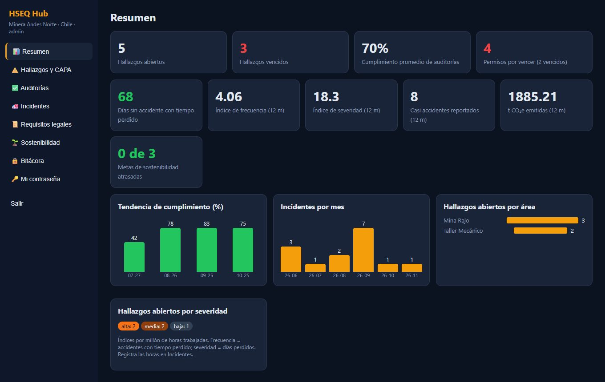
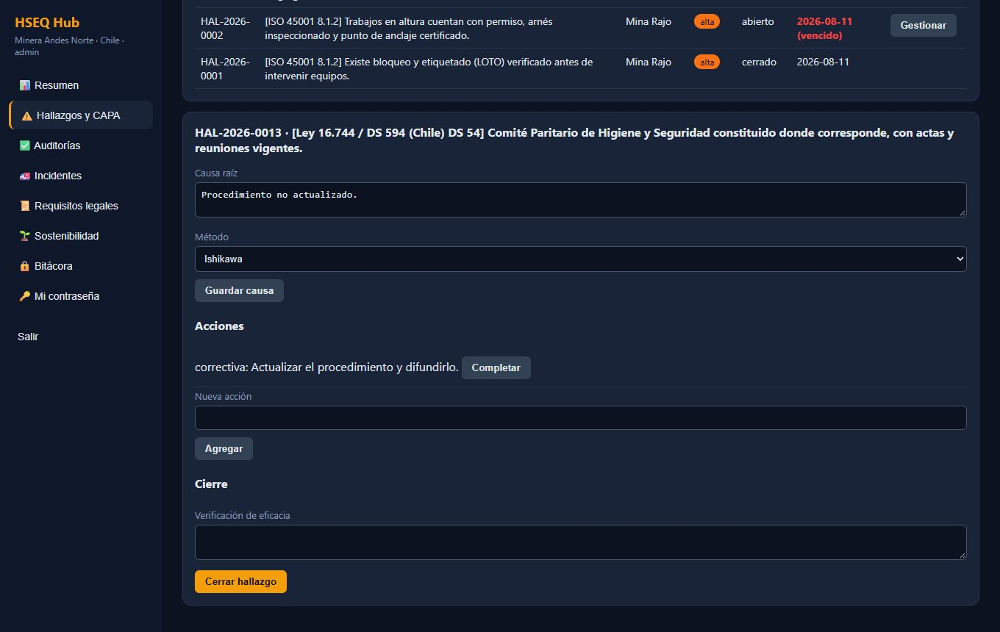
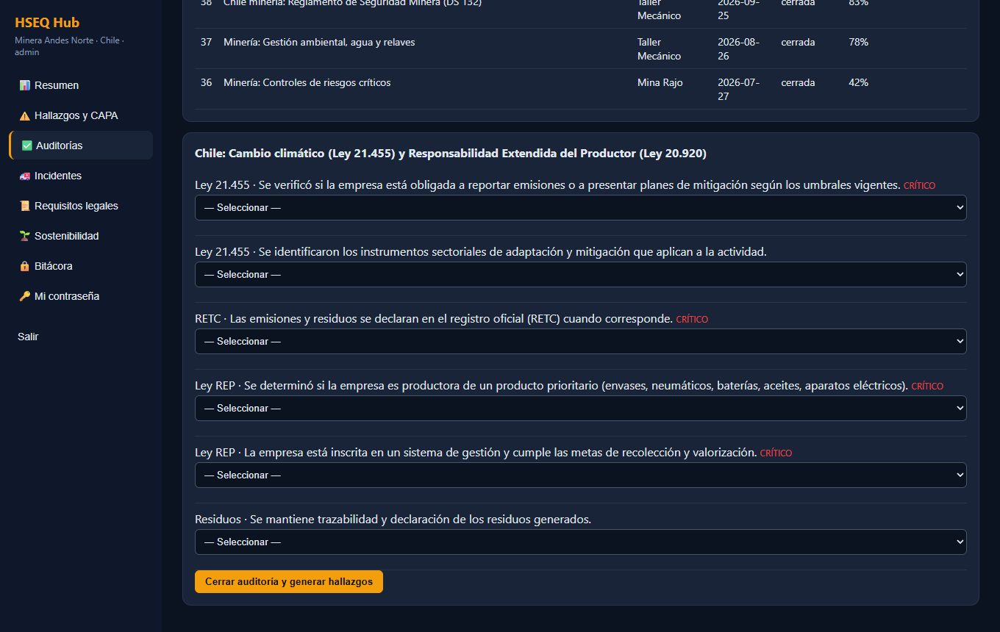
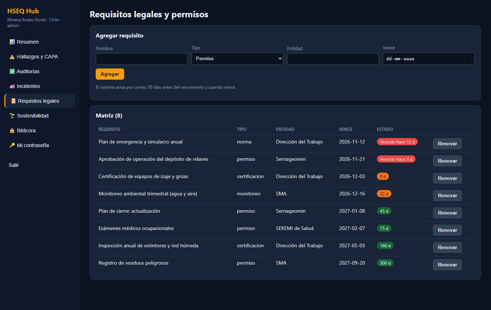
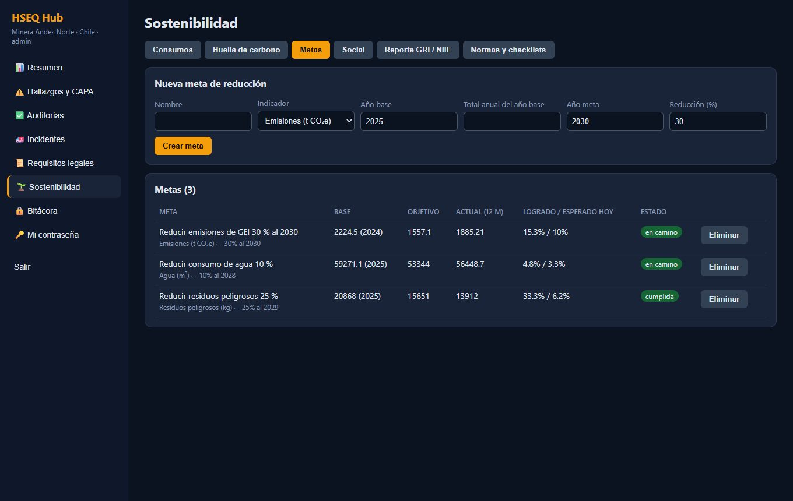
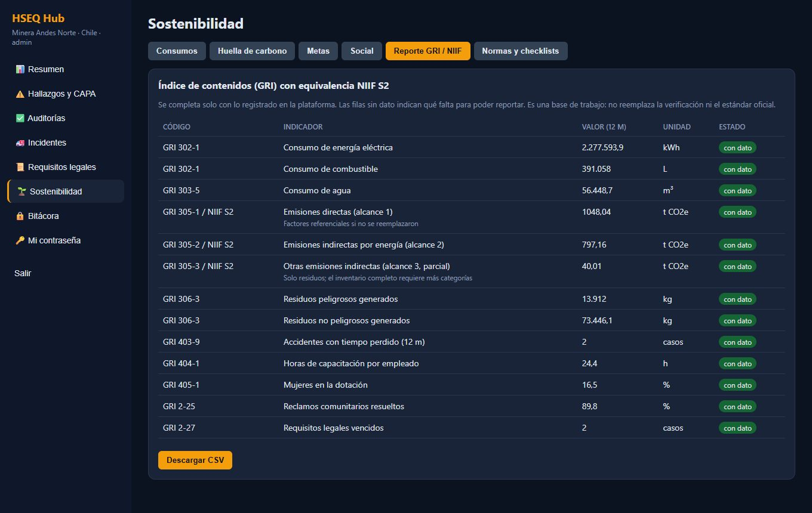
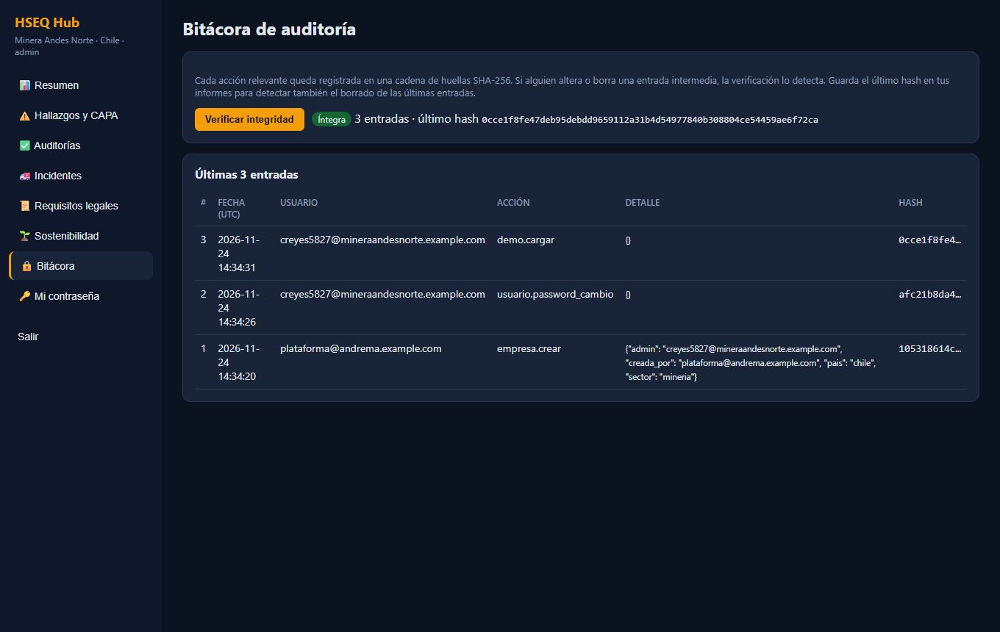

Seguridad, calidad, ambiente y sostenibilidad en un solo sistema
Del hallazgo en terreno al informe de auditoría, sin planillas ni carpetas. Cada incumplimiento queda registrado, con responsable, plazo y evidencia, hasta que se cierra.
Un producto de Andrema · hseq.andrema.tech

Panel de resumen: hallazgos, permisos, índices de seguridad, emisiones y metas de sostenibilidad en una sola vista. Datos de ejemplo.
El problema
La gestión HSEQ suele vivir en Excel, carpetas y correos
Cuando llega la auditoría, el trabajo es reunir la evidencia. Mientras tanto, los riesgos reales se pierden entre archivos.
Hallazgos sin seguimientoSe detectan en terreno, se anotan, y nadie recuerda quién debía corregirlos ni para cuándo.
Permisos y certificaciones vencidasUn monitoreo o una certificación vence sin aviso y el incumplimiento se descubre en la fiscalización.
Evidencia dispersaAuditorías, incidentes, indicadores ambientales y reportes de sostenibilidad en archivos distintos, sin trazabilidad.
HSEQ Hub reúne todo en un solo lugar y automatiza lo repetitivo: crea los hallazgos, calcula los plazos, avisa los vencimientos y deja un registro que no se puede alterar.
Cómo funciona
Un ciclo completo y automático
Cada paso alimenta al siguiente. No hay que copiar datos de una planilla a otra.
AuditarChecklists por norma, en terreno
RegistrarCada "no cumple" crea un hallazgo solo
CorregirCausa raíz, acciones y responsables
VerificarCierre con evidencia y eficacia
ReportarIndicadores, GRI y trazabilidad
Los plazos se asignan según la severidad: crítica 7 días · alta 15 · media 30 · baja 60. El sistema avisa por correo antes del vencimiento y cuando ya venció.
Módulos
Todo lo que necesita un sistema integrado HSEQ
Seguridad, calidad, ambiente y sostenibilidad conectados entre sí.
⚠️ Hallazgos y acciones correctivas (CAPA)
El corazón de ISO 9001, 14001 y 45001. Un hallazgo no se puede cerrar sin análisis de causa raíz, acciones completadas y verificación de eficacia.
Causa raíz con 5 Porqués o Ishikawa
Acciones con responsable, plazo y evidencia
Severidad, estado y vencimientos a la vista

Gestión de un hallazgo: causa raíz, acciones y cierre.

Ejecución de una auditoría con checklist normativo.
✅ Auditorías con checklists por norma
19 checklists de partida para minería e industria. Al cerrar la auditoría se calcula el puntaje y se generan los hallazgos de forma automática.
Ítems críticos que elevan la severidad
Tendencia de cumplimiento en el tiempo
Checklists por país y por sector
📜 Requisitos legales y permisos
La matriz de permisos, licencias, certificaciones y monitoreos, con semáforo de vencimiento y aviso automático 30 días antes.
Responsable y entidad por cada requisito
Renovación con nueva fecha de vencimiento
Alerta por correo al responsable

Matriz de requisitos legales con semáforo de vencimiento.
🚑
Incidentes e indicadores de seguridad
Accidentes con y sin tiempo perdido, casi accidentes y daños. Calcula el índice de frecuencia, el de severidad y los días sin accidente. Los eventos graves abren solos una investigación.
🏢
Varias empresas, datos separados
Cada empresa ve solo lo suyo. Roles de administrador, auditor y responsable para repartir el trabajo y los permisos.
Sostenibilidad
Más que consumos: huella de carbono, metas y reporte
Los bancos, los mandantes y los inversionistas piden información de sostenibilidad verificable. HSEQ Hub la calcula a partir de lo que ya registra la operación.
Alcance 1, 2 y 3Emisiones por combustible, electricidad y residuos
MetasReducción con seguimiento y estado automático
GRI + NIIF S2Índice de contenidos exportable a CSV
Huella de carbono mensual por alcance, con factores de emisión editables.

Metas de reducción: lo logrado frente a lo esperado a la fecha.

Índice GRI con equivalencia NIIF S2. Marca qué datos faltan para poder reportar cada indicador.
Los factores de emisión incluidos son referenciales: cada empresa registra el factor oficial vigente de su país, con su fuente. El alcance 3 cubre hoy los residuos.
Cobertura normativa
Pensado para Chile y Perú
Cada empresa ve los checklists de su país y de su sector, además de los estándares internacionales.
🇨🇱 Chile
DS 132, Reglamento de Seguridad Minera
Ley 16.744, DS 594, DS 40 y DS 54
DS 248 (relaves) y Ley 20.551 (cierre de faenas)
Ley 21.455 de Cambio Climático
Ley REP 20.920
🇵🇪 Perú
DS 024-2016-EM, Seguridad y Salud en Minería
Ley 29783 de Seguridad y Salud en el Trabajo
DS 040-2014-EM y Ley 28090 (cierre de minas)
Ley 30754 de Cambio Climático
DL 1278, gestión de residuos sólidos
🌐 Internacional
ISO 45001, 14001 y 9001
ISO 14064 (GEI) e ISO 50001 (energía)
GISTM, estándar global de relaves
Principios ICMM
NIIF S1 y S2, GRI, OIT 169
Los checklists son un punto de partida que resume los requisitos. Se validan y ajustan con cada cliente según su sistema de gestión y la normativa vigente.
Confianza
Registros que resisten una auditoría
Cada acción relevante queda en una bitácora encadenada con huellas SHA-256. Si alguien altera o borra una entrada, la verificación lo detecta.

Bitácora de auditoría con verificación de integridad.
🔒 Bitácora inmutableQuién hizo qué y cuándo. La base de datos impide modificar o borrar sus entradas.
🛡️ Acceso controladoAcceso solo por invitación, cambio obligatorio de la contraseña inicial y límite de intentos de ingreso.
💾 Respaldos diariosCopia diaria de la base de datos, verificada y con restauración probada.
Cómo empezamos
De la reunión al primer tablero
Sin instalación: se usa desde el navegador. Nosotros damos de alta la empresa y dejamos todo listo para comenzar.
PASO 1Alta de la empresaCreamos la cuenta, el administrador y el sector y país.
PASO 2Permisos y checklistsCargamos los requisitos legales y ajustamos los checklists.
PASO 3Primera auditoríaSe ejecuta en terreno y genera los primeros hallazgos.
PASO 4SeguimientoTablero, alertas y reportes de sostenibilidad en marcha.
En desarrollo: informes PDF de auditoría y de sostenibilidad, inspecciones móviles sin conexión, evidencias adjuntas (fotos y documentos) y alcance 3 completo.
Conoce HSEQ Hub con tus propios datos
Agenda una demo de 30 minutos y revisamos juntos cómo se vería tu operación en el sistema.